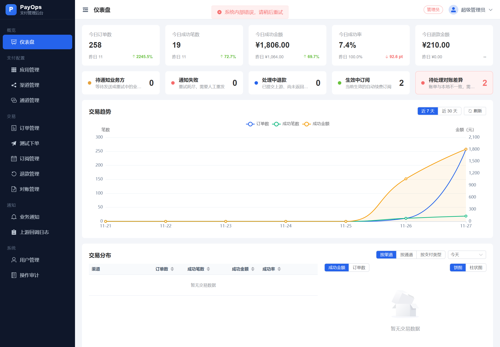
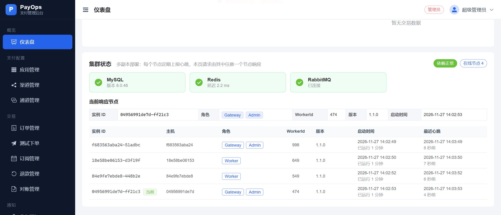
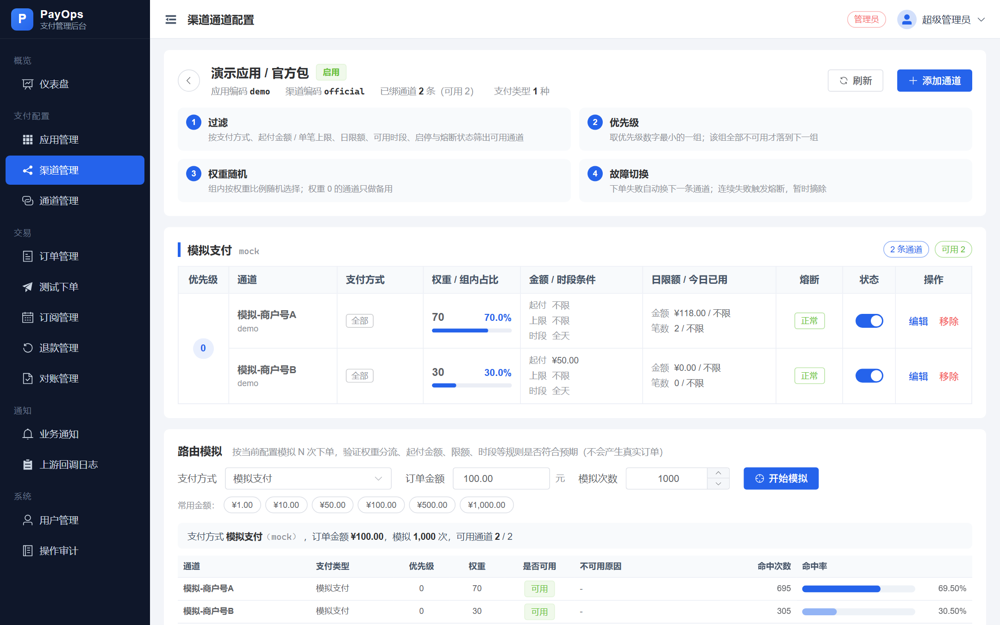
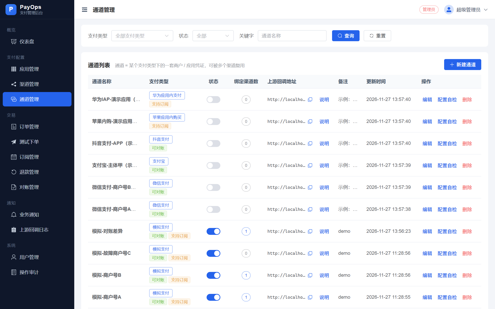
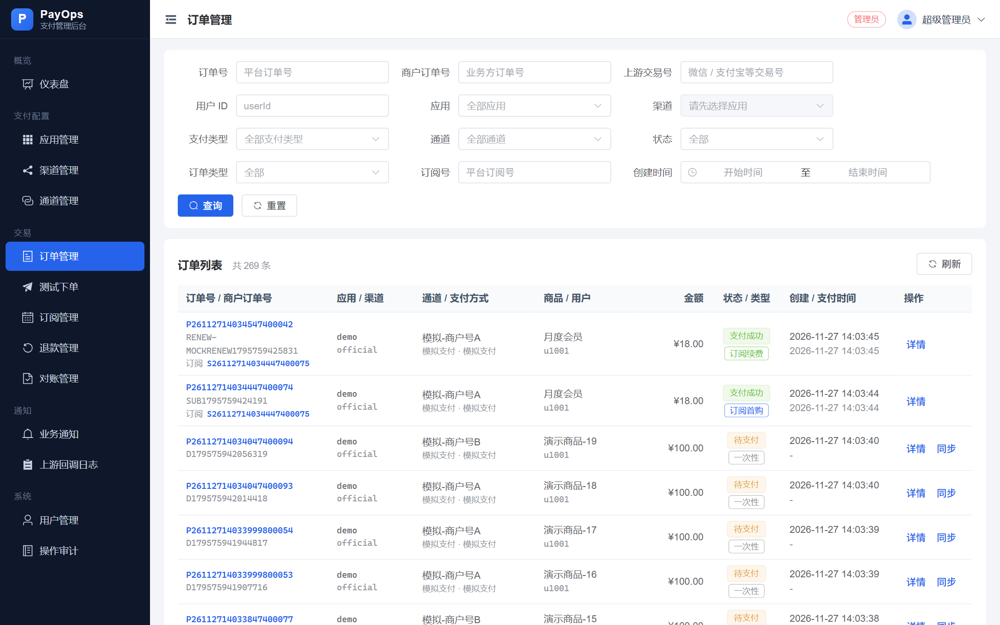
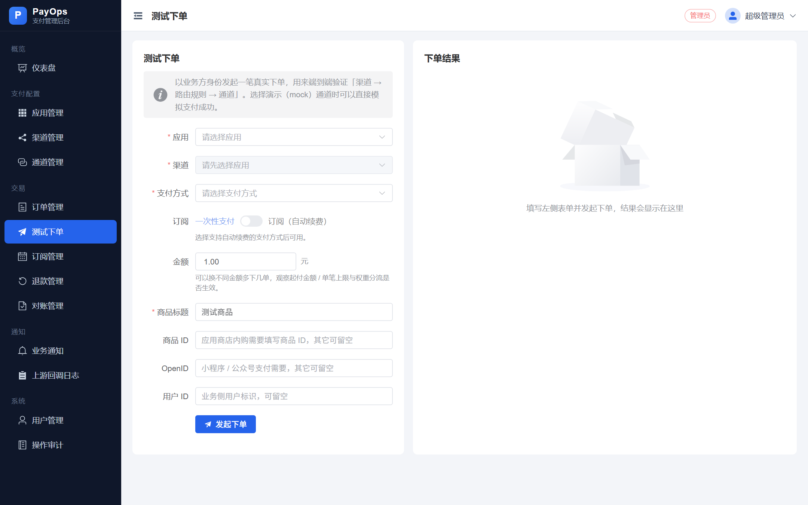
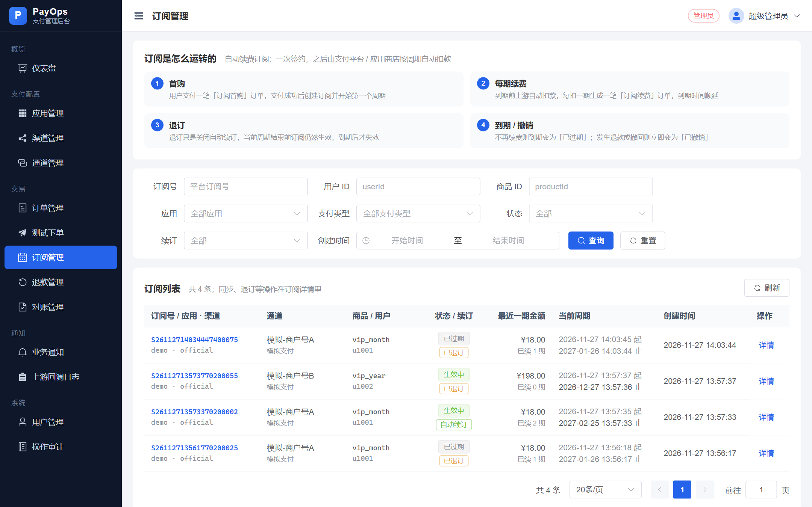
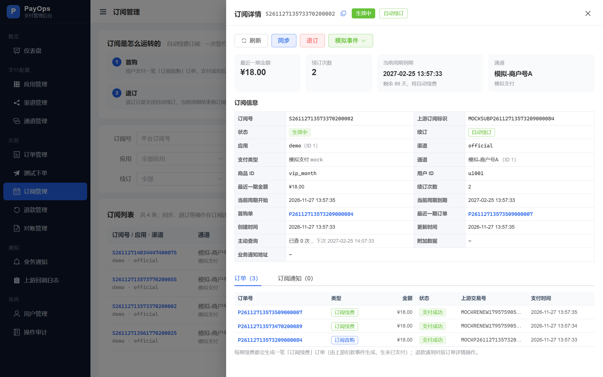
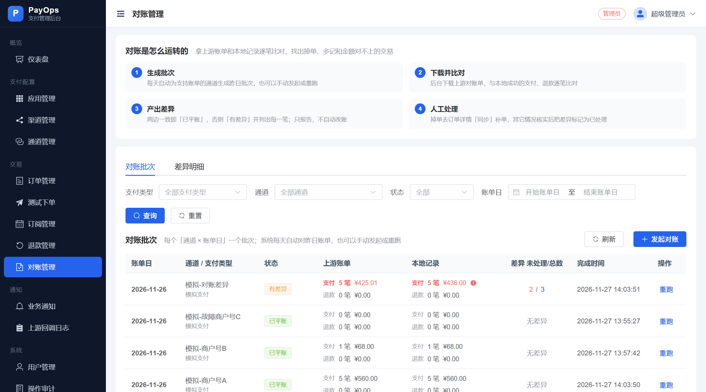
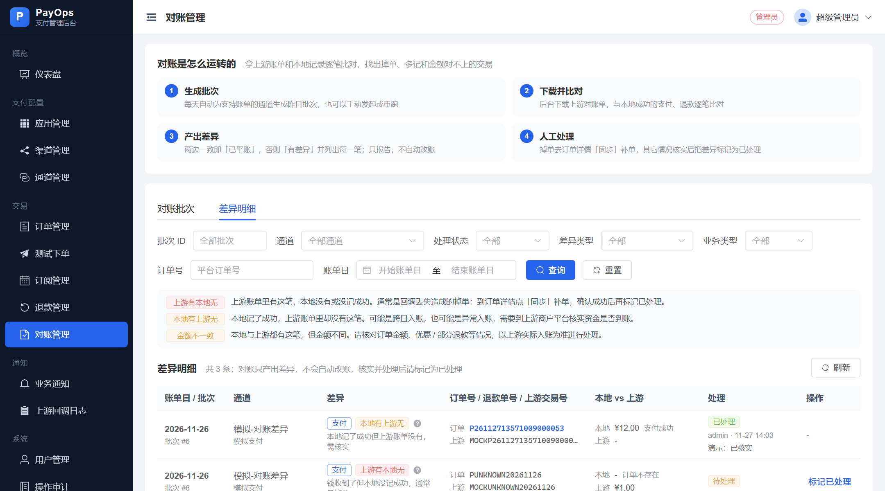

渠道决定能用什么支付；一个渠道可以绑定多个通道，同类型通道按权重、起付金额、限额自动分流与容灾。
围绕"钱不能错、服务不能停"设计。
过滤 → 优先级分组 → 组内加权随机；通道下单失败自动换下一个，连续失败熔断，到期自动恢复。后台可做路由模拟。
网关、后台、Worker 全部无状态、不选主。任务用 SKIP LOCKED + 租约领取，再经 RabbitMQ 竞争消费，副本可随意增减。
条件更新只成功一次；上游交易号唯一键防一证多用；回调验签后还要校验订单属于该通道；金额不一致拒绝入账。
订单状态与业务通知同事务写入，至少一次投递，9 档退避重试；同时发布 MQ 领域事件供内部系统订阅。
华为 / 荣耀 / 苹果：首购、续订、退订、恢复、到期、撤销全链路。每期扣款一笔独立订单，到期巡检兜底。
每日下载微信 / 支付宝 / 抖音支付账单，与本地支付、退款逐笔勾对；差异分三类，人工处理留痕。
待支付订单递进式主动查单；超时关单前先查上游；关单后迟到的成功回调仍会入账。
接入方 HMAC 签名 + 防重放；通道凭证 AES-256-GCM 落库加密；后台三级角色与操作审计。
新增一种支付类型只需实现一个接口并注册一行，后台表单与路由自动生效。
| 类型 | 支付方式 | 查单 | 退款 | 订阅 | 对账 |
|---|---|---|---|---|---|
| 微信支付 | APP / JSAPI·小程序 / 扫码 / H5 | ✓ | ✓ | ✓ | |
| 支付宝 | APP / 手机网站 / 电脑网站 / 扫码 | ✓ | ✓ | ✓ | |
| 抖音支付 | APP / H5 / PC 扫码 | ✓ | ✓ | ✓ | |
| 抖音小程序 | 担保支付 | ✓ | ✓ | ||
| 华为应用内支付 | IAP | ✓ | |||
| 荣耀应用内支付 | IAP | ✓ | |||
| 苹果应用内购买 | StoreKit 2 | ✓ | |||
| OPPO / vivo / 小米 | 联运 SDK 支付 | vivo·小米 |
以下截图来自 Docker Compose 多副本部署（2 个 api + 2 个 worker）上实际运行的后台。交易数据由演示脚本通过模拟通道产生（为展示对账，部分演示订单的时间被调到了前一天）；微信、支付宝等通道为未配置真实凭证的示例。点击可看大图。










同一份代码、同一个镜像，三种部署形态。
# 复制 appsettings.Local.example.json 为 appsettings.Local.json 并填写中间件账号
dotnet run --project src/PayOps.Server # http://localhost:5080
cd web/admin && npm install && npm run dev # http://localhost:5175
pwsh scripts/demo.ps1 # 端到端演示cd deploy/compose
cp .env.example .env # 修改口令与密钥
docker compose up -d --build
# 管理后台 http://localhost:8090 账号 admin
docker compose up -d --scale api=4 --scale worker=3kubectl apply -k deploy/k8s/overlays/demo # 自带演示中间件
# 生产：填写 overlays/prod/secret.env 后
kubectl apply -k deploy/k8s/overlays/prodPOST /api/pay/orders
X-App-Id / X-Timestamp / X-Nonce / X-Sign (HMAC-SHA256)
{ "channel": "official", "payMethod": "wechat_app",
"mchOrderNo": "B20261127001", "amount": 600,
"subject": "金币 x60" }